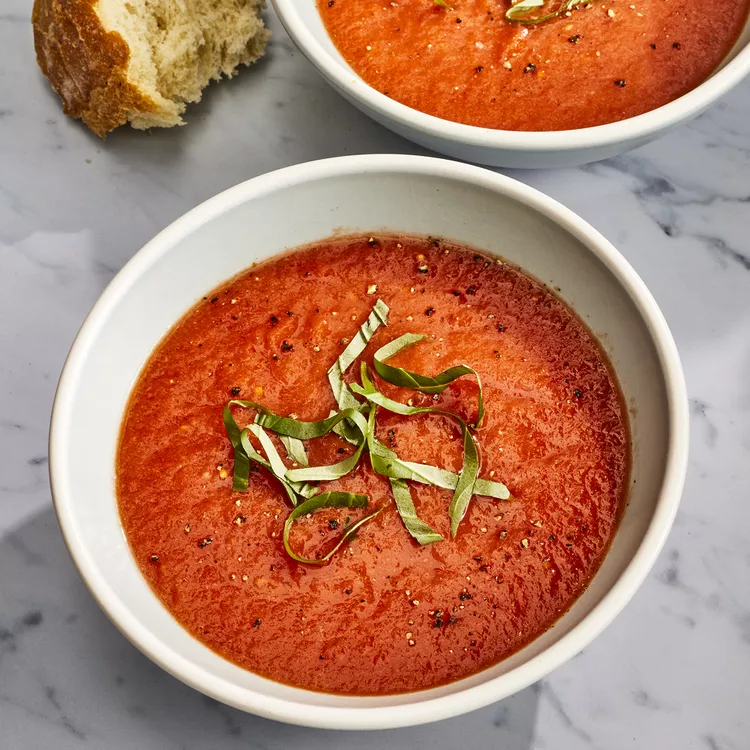

Fresh Tomato Soup Recipe

How to make Fresh Tomato Soup
In a large stockpot, boil the tomatoes, onion, garlic cloves, and chicken broth until the flavors blend together, about 20 minutes. Run the mixture through a food mill into a large bowl. This will separate any big chunks, plus the tomato skins.
If you don't have a food mill, a food processor or immersion blender will work too.
In the original stockpot, mix melted butter and flour to create a roux.
Gradually add the tomato mixture to the stockpot, whisking continuously so no lumps form. Season with salt and sugar to taste.
Ingredients
- 4 cups chopped fresh tomatoes
- 1 slice onion
- 4 cloves garlic
- 2 cups chicken broth
- 2 tablespoons butter
- 2 tablespoons all-purpose flour
- 1 teaspoon salt
- 2 teaspoons white sugar, or to taste
Steps
- In a stockpot, over medium heat, combine the tomatoes, large slice of onion, garlic cloves, and chicken broth. Bring to a boil, and gently boil for about 20 minutes to blend all of the flavors. Remove from heat and run the mixture through a food mill into a large bowl, or pan. Discard any stuff left over in the food mill.
- In the now empty stockpot, melt the butter over medium heat. Stir in the flour to make a roux, cooking until the roux is a medium brown. Gradually whisk in a bit of the tomato mixture, so that no lumps form, then stir in the rest. Season with sugar and salt, and adjust to taste.
Return to main page